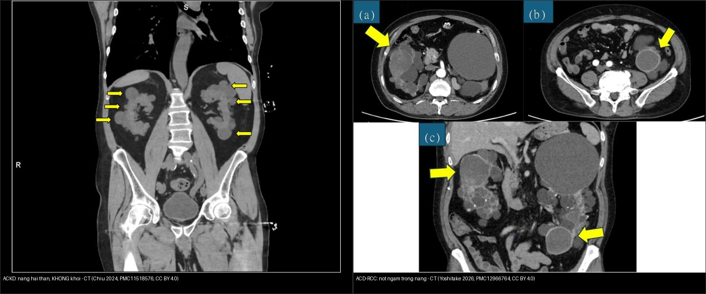
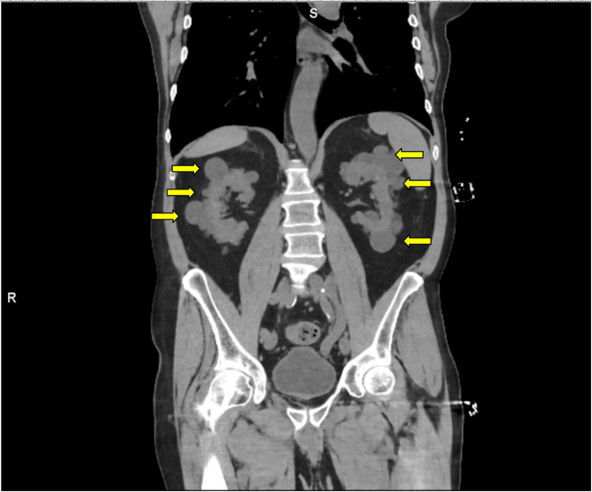
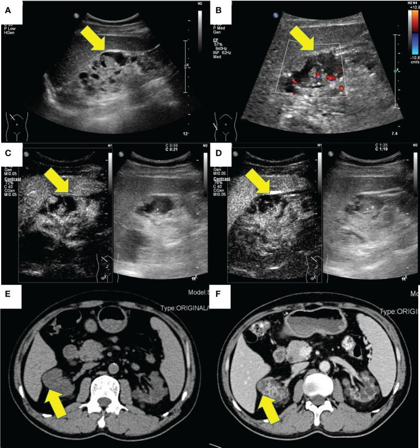
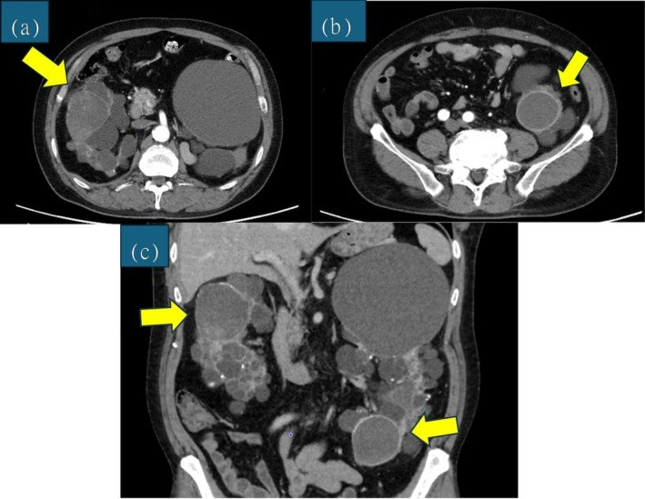
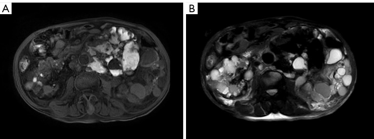
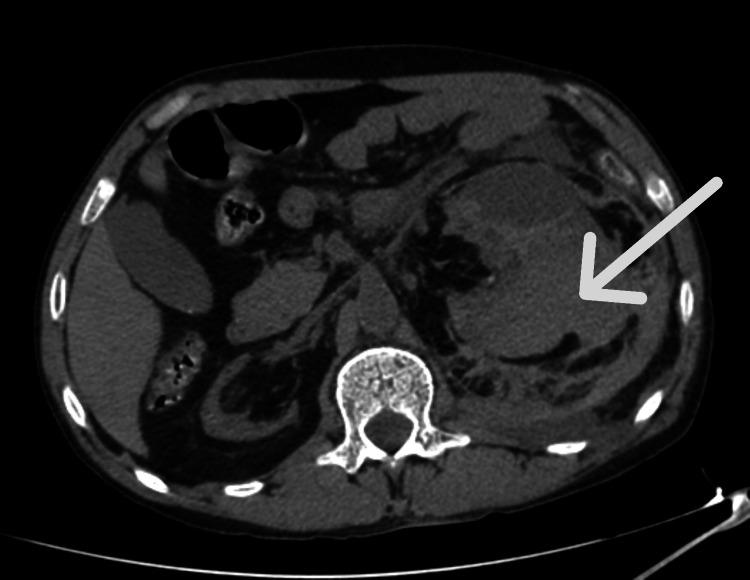

153 — Thận nang mắc phải trên lọc máu & ung thư tế bào thận / ACKD & ACD-RCC
Tags: pattern:than-nang-mac-phai pattern:u-than-dac vung:than protocol:sang-loc-than-loc-mau score:Bosniak incidentaloma:u-than-tinh-co
Mức chắc chắn (certainty): tổng hợp y văn (literature synthesis) — nhóm tự biên từ y văn mở (Cureus 2024/2026, Front Oncol 2023, IJU Case Rep 2026, Quant Imaging Med Surg 2025, J Clin Med 2026, Pan Afr Med J 2023, Pediatr Nephrol 2025), số liệu lấy nguyên từ bài gốc.
1. Tổng quan — vì sao "thận teo trên lọc máu" lại nang hóa và sinh ung thư
- Bệnh thận nang mắc phải (acquired cystic kidney disease — ACKD): xuất hiện ≥ 3 nang mỗi thận ở thận nhỏ hoặc bình thường (một số định nghĩa kinh điển dùng ≥ 4 nang/thận), loại trừ bệnh nang di truyền/bẩm sinh (bệnh thận đa nang trội nhiễm sắc thể thường — ADPKD, xơ cứng củ — TSC) (PMC10632177, PMC11947055).
- TẠI SAO thận teo lại nang: trong môi trường urê huyết (uremia) mạn, các ống thận còn sống bị kích thích bởi yếu tố tăng trưởng + proto-oncogene → tăng sản biểu mô ống thận → túi nang tách khỏi ống gốc, đa số nhỏ, ở vùng vỏ lẫn tủy, hai bên, đối xứng. Mô thận bị xơ teo dần theo thời gian lọc máu (PMC11947055).
- Dịch tễ & ngưỡng định lượng (chốt):
- Tỉ lệ ACKD ở người chạy thận nhân tạo định kỳ ~31,6% (thời gian lọc trung vị 33,5 tháng; PMC10632177), ở trẻ em lọc máu/thay thận 42% (PMC11947055).
- Càng lọc lâu càng nang nhiều: thời gian lọc ≥ 28 tháng làm tăng nguy cơ ACKD ~6 lần (OR hiệu chỉnh 6,09; KTC 95% 1,43–25,82; PMC11947055); > 36 tháng → OR 7,1 (KTC 95% 3,3–15,5); giới nam OR 2,6 (PMC10632177). Sau > 10 năm lọc, tỉ lệ nang hóa có thể tới ~80%.
- Thận nhỏ (định lượng): chiều dài trung bình ~85 m m (trái) / ~81 mm (phải) — đây là mấu chốt phân biệt với ADPKD (thận khổng lồ) (PMC10632177).
- TẠI SAO ACKD sinh ung thư: lọc máu mạn = viêm mạn + suy giảm giám sát miễn dịch + tổn thương oxy hóa DNA → ung thư tế bào thận liên quan bệnh nang mắc phải (acquired cystic disease-associated RCC — ACD-RCC), một thực thể mới trong phân loại WHO 2016. Bệnh nhân ACKD có nguy cơ RCC tăng hơn 100 lần so với dân số chung (PMC12923457, PMC10269903).
- ACD-RCC là u ác hay gặp nhất ở thận người lọc máu, chiếm ~36% các u ác của thận bệnh nhân dialysis (PMC12966764); tinh thể oxalat canxi trong u/mô kẽ là dấu hiệu mô bệnh học đặc trưng (pathognomonic) (PMC12966764, PMC10269903).
- Hệ quả: khối u thường nhỏ, hai bên, đa ổ, mọc trong nền nhiều nang → dễ bị nang che lấp (satisfaction of search); phần lớn không triệu chứng, chỉ phát hiện khi tầm soát.
2. Mẫu hình — gamut nang thận ở bệnh nhân CKD/lọc máu (Gamut)
- Nhiều nang nhỏ hai thận trên thận NHỎ/BÌNH THƯỜNG ở người lọc máu → ACKD (lành tính về bản thân nang, nhưng phải soi tìm nốt đặc ngấm).
- Thận KHỔNG LỒ hai bên, nang lan tỏa cả gan → ADPKD (di truyền, thường còn nước tiểu, có tiền sử gia đình).
- Nang đơn thuần vài nang → nang thận đơn thuần (không tăng nguy cơ rõ nếu Bosniak I).
- Nang có vách/thành dày, vôi hóa, xuất huyết → nang phức tạp → phải xếp Bosniak (IIF/III/IV).
- Nốt đặc ngấm trong nền nang → ACD-RCC (hoặc RCC thường gặp khác: ccRCC/pRCC — xem bài 151).
- Nang + máu tụ quanh thận (không đối xứng, tăng đậm độ cấp) → chảy máu trong/thành nang = hội chứng Wunderlich — cấp cứu.
- Gợi nhớ "3C — Cyst, Cancer, Crash": Cyst (nhiều nang che u) · Cancer (ACD-RCC, nguy cơ ×100) · Crash (chảy máu quanh thận/Wunderlich).
3. Bảng so sánh phân biệt (ma trận đối chiếu)
| Thực thể (entity) | Hình ảnh điển hình | Chốt vào (rule-in) | Chốt loại (rule-out) | Gợi ý xác nhận |
|---|---|---|---|---|
| ACKD | Nhiều nang nhỏ hai bên, vỏ+tủy, thận nhỏ (~81–85 mm), ở người lọc máu | ≥ 3 nang/thận + thận nhỏ/bình thường + đang lọc máu | Thận khổng lồ + nang gan → ADPKD | Siêu âm/ MRI không cản quang đối chiếu lịch sử lọc |
| ADPKD | Thận khổng lồ hai bên + nang gan/tụy + tiền sử gia đình | Thận to + nang gan + cả nhà mắc | Nhiều nang nhưng thận teo nhỏ → ACKD | Gene PKD1/PKD2, MRI đếm nang |
| Nang phức tạp (Bosniak IIF–IV) | Vách/thành dày, vôi hóa, ngấm sau tiêm | Thành/vách ngấm ≥ 4 mm hoặc nốt ngấm = Bosniak III–IV | Vách mảnh < 2 mm không ngấm = Bosniak I | CEUS/CT đa thì; theo dõi Bosniak III (40–60% ác) |
| ACD-RCC | Nốt đặc ngấm trong/ven nang, nền nhiều nang, hai bên, hay ở nam | Nốt đặc ngấm ở BN ESRD/lọc máu + nền ACKD | Nang xuất huyết đơn thuần (không có phần đặc ngấm) | Mô bệnh (tinh thể oxalat); CT/MRI/CEUS |
| Chảy máu nang / Wunderlich | Khối tăng đậm độ cấp (hyperdense) quanh/cạnh thận, không ngấm | Máu tụ quanh thận + đau hông lưng đột ngột + tụt Hb | U đặc ngấm (có mạch) → ACD-RCC | CT không cản quang; DSA + nút mạch khi chảy máu hoạt tính |
| RCC thận ghép / thận native sau ghép | Khối ngấm thì động mạch + thải thuốc ở thận native teo nang | Sau ghép + ức chế miễn dịch + khối ngấm | Nang đơn thuần không ngấm | CT đa thì/MRI; theo dõi siêu âm hằng năm |

Trái: nang nhỏ hai bên trên thận nhỏ, không có phần đặc ngấm. Phải: nốt đặc ngấm (mũi tên vàng) trong nền nang = ACD-RCC. Nguồn: Chiu B et al., Cureus 2024 (PMC11518576) + Yoshitake R et al., IJU Case Rep 2026 (PMC12966764), CC BY 4.0. Ảnh ghép letterbox.4. Protocol chụp + hệ phân độ Bosniak + lịch tầm soát
- Siêu âm bụng (gray-scale + Doppler) là tuyến đầu để tầm soát nang/khối ở bệnh nhân lọc máu; CEUS (siêu âm cản quang vi bọt khí) là lựa chọn ưu tiên để đánh giá nang phức tạp (PMC13578127, PMC10269903).
- TẠI SAO chọn CEUS: vi bọt khí hoàn toàn nội mạch, không độc thận, dùng được ở mọi giai đoạn CKD và người lọc máu → đánh giá ngấm thật của vách/thành/nốt mà không lo thuốc cản quang iod hay gadolinium (nguy cơ xơ hóa thận–hệ thống — NSF).
- MRI không cản quang (T1/T2, DWI) khi cần mô tả nang/khối; tránh nhóm gadolinium I nếu eGFR < 30 mL/phút/1,73 m² (nguy cơ NSF) — ưu tiên nhóm II nếu thật cần.
- CT đa thì chỉ khi nghi u đặc/để xếp Bosniak và không dùng được CEUS/MRI; bệnh nhân vô niệu/lọc máu không sợ độc thận do iod nhưng nên hạn chế liều.
- Hệ phân độ Bosniak 2019 (nguy cơ ác): I < 1% (vách < 2 mm, không vách/vôi) · II** ~1–2% · IIF ~5–10% (theo dõi) · III có vách/thành ngấm ≥ 4 mm hoặc dày đều → 40–60% ác · IV có nốt đặc/phần đặc ngấm → **> 80% ác. CEUS dùng bản Bosniak điều chỉnh (EFSUMB 2020) — phân độ dựa trên ngấm, không dựa đậm độ hay T1 (PMC13578127, PMC11947055).
- Lịch tầm soát gợi ý: siêu âm hằng năm (cả thận native và thận ghép) cho bệnh nhân lọc máu/ghép thận nguy cơ cao; chụp cản quang cho nang Bosniak ≥ II; ứng viên ghép thận cần tầm soát trước ghép vì ức chế miễn dịch làm u tiến triển nhanh (PMC11947055, PMC13302036).
flowchart TD
A[BN CKD/loc mau: than NHO nhieu nang] --> B{Thay not DAC NGAM trong nen nang?}
B -->|Co| C[ACD-RCC: cat ban phan/cat than + mo benh]
B -->|Khong| D{Nang don thuan hay PHUC TAP?}
D -->|Don thuan Bosniak I-II| E[Theo doi dinh ky, khong can mo]
D -->|Phuc tap IIF-IV| F[CEUS / MRI khong tuong phan / CT da thi]
F --> G{Thanh/vach ngam >= 4mm hay not ngam?}
G -->|Khong, IIF| H[Theo doi 6 thang, 12 thang, roi hang nam]
G -->|Co, III-IV| I[Can nhac cat ban phan / sinh thiet]
A --> J{Dau hong lung + tut Hb?}
J -->|Co| K[CT khong tuong phan: mau tu quanh than = Wunderlich -> DSA nut mach]
5. Biến thể bình thường và cạm bẫy
- ACKD vs ADPKD — chốt ở KÍCH THƯỚC THẬN: ACKD = thận nhỏ/bình thường (~81–85 mm) trên người lọc máu; ADPKD = thận khổng lồ + nang gan + tiền sử gia đình.
- Giả ngấm (pseudoenhancement): nang/nốt < 1 cm có thể "ngấm" giả do hiệu ứng thể tích (volume averaging) trên CT — xác nhận bằng lát mỏng/CEUS/MRI.
- Bỏ sót u vì "nhiều nang quá" (satisfaction of search): phải càn từng nang tìm nốt/vách đặc ngấm; đo ROI 3 thì với ngấm thật ≥ 20 HU trên CT.
- T1 sáng trong nang KHÔNG = u: máu/nhầy cũ hay xuất huyết trong nang sáng T1 — dấu chốt vẫn là thành/vách/nốt NGẤM, không phải đậm độ/T1.
- Gadolinium — cạm bẫy an toàn: nhóm I ở eGFR < 30 → NSF; đi đường CEUS/MRI không cản quang trước.
- Wunderlich: chảy máu quanh thận có thể là biểu hiện đầu tiên, dễ nhầm sỏi/đau lưng cơ học — CT không cản quang + theo dõi Hb; chảy máu hoạt tính → DSA nút mạch.
- Thận ghép: thận native teo nang vẫn có nguy cơ (không biến mất sau ghép) — theo dõi siêu âm hằng năm, vì ức chế miễn dịch thúc đẩy u (PMC13302036).
6. Tự lượng giá — Blind Quiz
Ca 1 — Nam 78 tuổi, suy thận giai đoạn cuối (creatinine 19,7 mg/dL), té ngã nhập viện. CT bụng không cản quang (coronal) có bất thường ở hai thận.

- Hỏi: mô tả bất thường? Thận to hay nhỏ? Ba chẩn đoán phân biệt? Cần soi thêm gì?
Bấm để hiện đáp án (findings + chẩn đoán)
- Findings: nhiều nang nhỏ hai bên vùng vỏ lẫn tủy (mũi tên vàng), thận không to — trên nền suy thận giai đoạn cuối.
- Chẩn đoán: ACKD — chốt bởi "≥ 3 nang/thận + thận nhỏ/bình thường + ESRD"; phân biệt ADPKD (thận khổng lồ + nang gan), nang đơn thuần, nang phức tạp. Phải càn tìm nốt đặc ngấm (ACD-RCC) vì nguy cơ RCC > 100 lần.
- Nguồn: Chiu B et al., Cureus 2024, Fig. 2, PMC11518576, CC BY 4.0.
Ca 2 — Nam 58 tuổi lọc máu, siêu âm + CT thấy khối ở thận phải trên nền thận nhiều nang.

- Hỏi: phần nào của khối cần đánh giá? Dấu hiệu nào khẳng định u ác? Vì sao siêu âm/CEUS quan trọng ở người CKD?
Bấm để hiện đáp án (findings + chẩn đoán)
- Findings: nang nền + phần đặc của khối NGẤM mạnh (Doppler có mạch, CEUS ngấm, CT cản quang ngấm).
- Chẩn đoán: ACD-RCC — phần đặc ngấm (không phải đậm độ/T1 dịch nang) mới là chốt; xác nhận bằng CEUS/CT/MRI + mô bệnh (tinh thể oxalat đặc trưng). CEUS giúp tránh iod/gadolinium.
- Nguồn: Yang Y et al., Front Oncol 2023, Fig. 1, PMC10269903, CC BY 4.0.
Ca 3 — Bệnh nhân lọc máu dài ngày, CT bụng: hai thận nang, mỗi bên có một nốt đặc ngấm.

- Hỏi: hai nốt ngấm nằm ở đâu? Chẩn đoán? Vì sao "u ác hai bên" lại hay gặp ở người lọc máu?
Bấm để hiện đáp án (findings + chẩn đoán)
- Findings: thận hai bên nang hóa nền + nốt đặc ngấm ở cực giữa phải và cực dưới trái (mũi tên vàng) = ACD-RCC hai bên.
- Chẩn đoán: ACD-RCC — hay gặp nam, lọc máu lâu, hai bên/đa ổ; ~36% u ác của thận dialysis; điều trị cắt thận (bán phần khi có thể).
- Nguồn: Yoshitake R et al., IJU Case Rep 2026, PMC12966764, CC BY 4.0.
Ca 4 — Nam 54 tuổi, ACD-RCC, MRI bụng (T1WI và T2WI-SPAIR).

- Hỏi: nang ở A và B khác nhau thế nào? Vài nang T1 SÁNG nhưng T2 TỐI — nghĩ gì? Có phải u không?
Bấm để hiện đáp án (findings + chẩn đoán)
- Findings: nhiều nang T1 thấp/T2 cao (dịch đơn thuần); một số nang T1 cao + T2-SPAIR thấp = xuất huyết trong nang (không phải u).
- Chốt: T1 sáng KHÔNG đồng nghĩa u; dấu hiệu ác là thành/vách/nốt ngấm (xem Ca 2–3). Đối chiếu CEUS/CT để không sinh thiết oan.
- Nguồn: Chen Q, Tan S., Quant Imaging Med Surg 2025, PMC12514716, CC BY-NC-ND 4.0 (giữ nguyên bản).
Ca 5 — Bệnh nhân lọc máu, đau hông lưng trái đột ngột, tụt huyết áp/Hb. CT bụng không cản quang.

- Hỏi: khối tăng đậm độ là gì (dịch/u/máu)? Dấu hiệu chốt? Bước xử trí nếu đang chảy máu hoạt tính?
Bấm để hiện đáp án (findings + chẩn đoán)
- Findings: khối tăng đậm độ cấp (máu) lan khoang quanh thận trái + sau phúc mạc, không ngấm (không phải u đặc).
- Chẩn đoán: chảy máu từ nang trên nền ACKD (hội chứng Wunderlich) — ổn định: theo dõi/bù máu; chảy máu hoạt tính → DSA nút mạch (như Ca nguyên văn này).
- Nguồn: Mbina Nzienghi D et al., Cureus 2026, Fig. 1, PMC13352129, CC BY 4.0.
Ca 6 — Ghép đối chiếu: bên nào chỉ có nang, bên nào có phần đặc ngấm?
Bấm để hiện đáp án (findings + chẩn đoán)
- Trái — ACKD: nang nhỏ hai bên, không có phần đặc ngấm → theo dõi. Phải — ACD-RCC: nốt đặc ngấm trong nền nang → u cần can thiệp.
- Chốt: ở người lọc máu, mọi nang đều phải soi thành/vách/nốt NGẤM; đậm độ/T1 không quyết định. Nguồn: Chiu 2024 (PMC11518576) + Yoshitake 2026 (PMC12966764), CC BY 4.0.
Bài liên quan chéo
- 100 – Tổng quan hệ Bụng
- 150 – Nang thận Bosniak (ngấm thật, Bosniak I–IV)
- 151 – U thận đặc: RCC vs oncocytoma vs AML (phân loại RCC, ccLS)
- 152 – Sỏi niệu & ứ nước (đau hông lưng — phân biệt)
- 141 – Phúc mạc (máu tụ sau phúc mạc)
Ảnh
- Tên file:
153_slug_Modality_SourceID.jpg. Nguồn + giấy phép từng ảnh trongimages/CREDITS.md. - Ảnh CC BY-NC-ND (PMC12514716) giữ nguyên bản, không crop/ghép; ảnh ghép chỉ dùng ảnh CC BY (letterbox nền đen).
Không dùng để chẩn đoán độc lập khi chưa có người hướng dẫn.